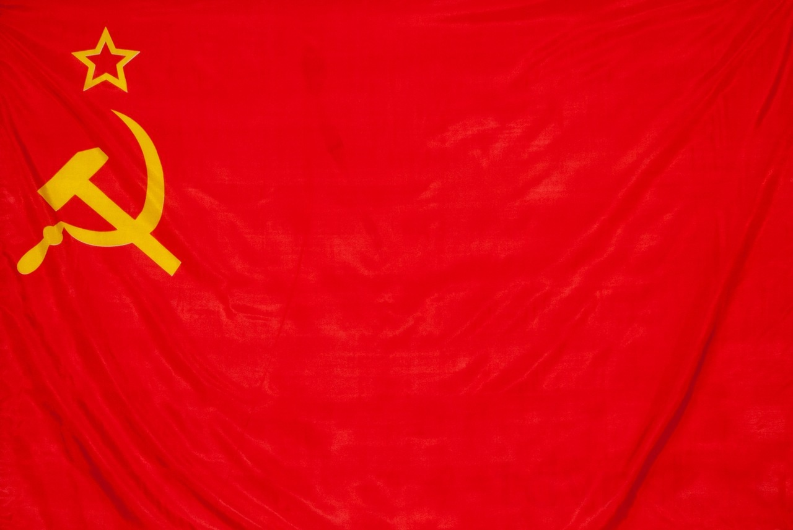
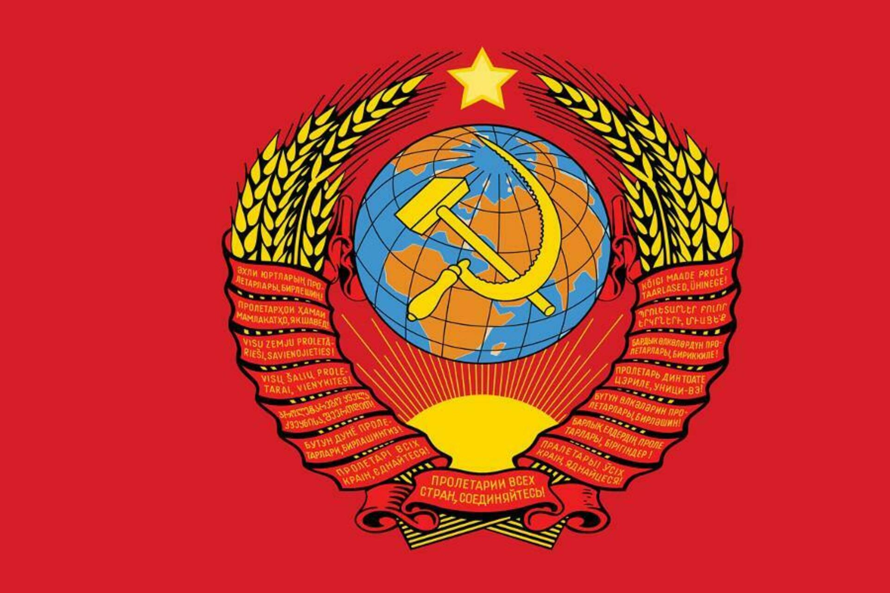
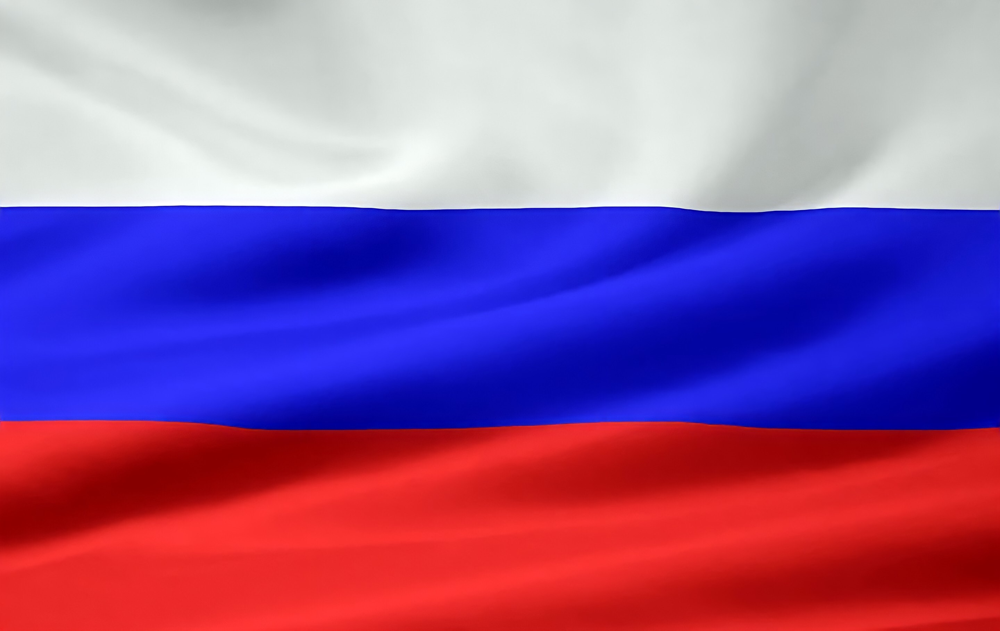
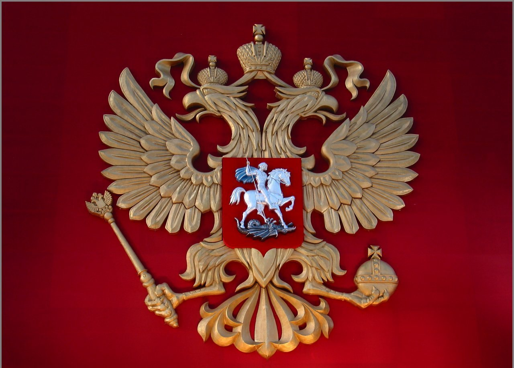

Создание Советского Социалистического Союза Республик стало следствием Октябрьской революции и Гражданской войны в России в 1917–1922 годах. Датой образования СССР стало 30 декабря 1922 года. Столицей СССР стала Москва. Основателем СССР формально можно считать лидера партии большевиков и руководителя Совнаркома, то есть правительства, — Владимира Ленина. На момент появления Советский Союз был самым крупным государством на планете.
Страны делали усилия по предотвращению войны, но все они лишь оттягивали ее начало, оставляя возможность Гитлеру подготовиться к нападению. Между СССР и Германией 23 августа 1939 года был заключен договор о ненападении, который также получил название – пакт Молотова-Риббентропа. Он помог выиграть почти год на подготовку к войне, хотя этого оказалось катастрофически мало.
Причины Великой Отечественной Войны
Главными причинами историки считают:
Смена политического курса, когда к власти в Германии пришли национал-социалисты, стремившиеся пересмотреть результаты Первой мировой войны
Начало Второй мировой войны, в ходе которой выросли аппетиты Германии Об этом сообщает
Уверенность в быстрой победе над СССР, Гитлер рассчитывал оккупировать Советский Союз в течение года
Недовольство присоединением к СССР Прибалтики, Бессарабии и Северной Буковины, хотя это было прописано в соглашениях 1939 года
Этапы Великой Отечественной войны
В ходе историки выделяют три этапа:
Начальный период – с 22 июня 1941 по ноябрь 1942 года – когда Красная Армия отступала
Коренной перелом – с ноября 1942 по конец 1943 года – когда Красная Армия перешла в наступление
аключительный период – с начала 1944 по май 1945 года – когда Красная Армия завершила разгром фашистских войск.
Итоги Великой Отечественной Войны
Обе стороны потеряли слишком много людей,особенно СССР
СССР пришлось востанвливать постройки, силы, а Германии и вовсе востанавливать население
Флаг. На красном полотне изображены перекрестевщиеся молот и серп

Герб.Герб был закреплён конституцией СССР (статья 143) и представлял собой изображение серпа и молота на фоне земного шара, в лучах солнца и в обрамлении колосьев, с надписью на языках союзных республик «пролетарии всех стран, соединяйтесь!». В верхней части герба — пятиконечная красная звезда с жёлтым ободом.

Гимн. Государственный гимн СССР — официальный государственный гимн Советского Союза, принятый в 1943 году вместо «Интернационала».Слова для гимна написали С. В. Михалков и Эль-Регистан, музыку — А. В. Александров.
Процесс распада начался во второй половине 1980-х годов в ходе перестройки, когда Генеральный секретарь ЦК КПСС (1985—1991) М. С. Горбачёв инициировал проведение реформ, направленных на экономическое ускорение, гласность и демократизацию государственной и общественно-политической жизни.
Одним из главных признаков приближавшегося распада СССР явилось стремление союзных республик к большей государственной и экономической независимости от союзного центра («парад суверенитетов»); в сентябре 1991 года союзный центр и главы союзных республик признали независимость Латвии, Литвы и Эстонии. В течение последних лет существования СССР на его территории начались или получили новый импульс ряд межнациональных конфликтов (карабахский, грузино-абхазский, грузино-южноосетинский, конфликт в Приднестровье и другие), произошёл экономический кризис. Центральная власть оказалась неспособной управлять обстановкой в стране.
17 марта 1991 года на территории страны прошёл всесоюзный референдум о сохранении СССР. На вопрос о «необходимости сохранения СССР как обновлённой федерации равноправных суверенных республик» положительно ответили свыше 76 % участников голосования. После референдума стартовал Новоогарёвский процесс, который должен был завершиться подписанием договора о создании Союза Суверенных Государств, объявлявшегося преемником СССР, однако после провала августовской попытки захвата власти консервативной фракцией партийных функционеров многие союзные республики объявили о независимости от СССР.
Распад Союза ССР завершился подписанием Беловежских соглашений и Алма-Атинской декларации 8 и 21 декабря 1991 года соответственно, которые учредили политический союз большинства бывших советских республик Содружество Независимых Государств[комм. 1]. 25 декабря 1991 года президент СССР Михаил Горбачёв сложил свои полномочия, а на следующий день, 26 декабря 1991 года, Совет Республик Верховного Совета СССР принял декларацию о прекращении существования СССР.
Путин Владимир Владимирович (до 7.5.2000 и.о.; избран 26.3.2000; повторно избран 14.3.2004, вступил в должность 7.5.2004)
Медведев Дмитрий Анатольевич (избран 2.3.2008, до 7.5.2008 – вновь избранный и не вступивший в должность президент)
Путин Владимир Владимирович (избран 4.3.2012, до 7.5.2012 – вновь избранный и не вступивший в должность президент; повторно избран 18.3.2018, вступил в должность 7.5.2018)
Флаг. На полотне изоражено 3 цвета: Синий, красный, белый

Государственный герб России представляет собой щит красного (червлёного) цвета, на котором находится изображение золотого двуглавого орла, расправляющего крылья. Каждую из голов птицы венчает малая корона, сверху над которыми расположена большая корона. Все они соединяются лентой. Это знак суверенитета Российской Федерации.
В одной лапе орел держит скипетр, а в другой – державу, что символизирует единство страны и государственную власть.

Гимн.Музыка и основа текста были позаимствованы из гимна Советского Союза, мелодию к которому написал Александр Александров на стихи Сергея Михалкова и Габриэля Эль-Регистана.